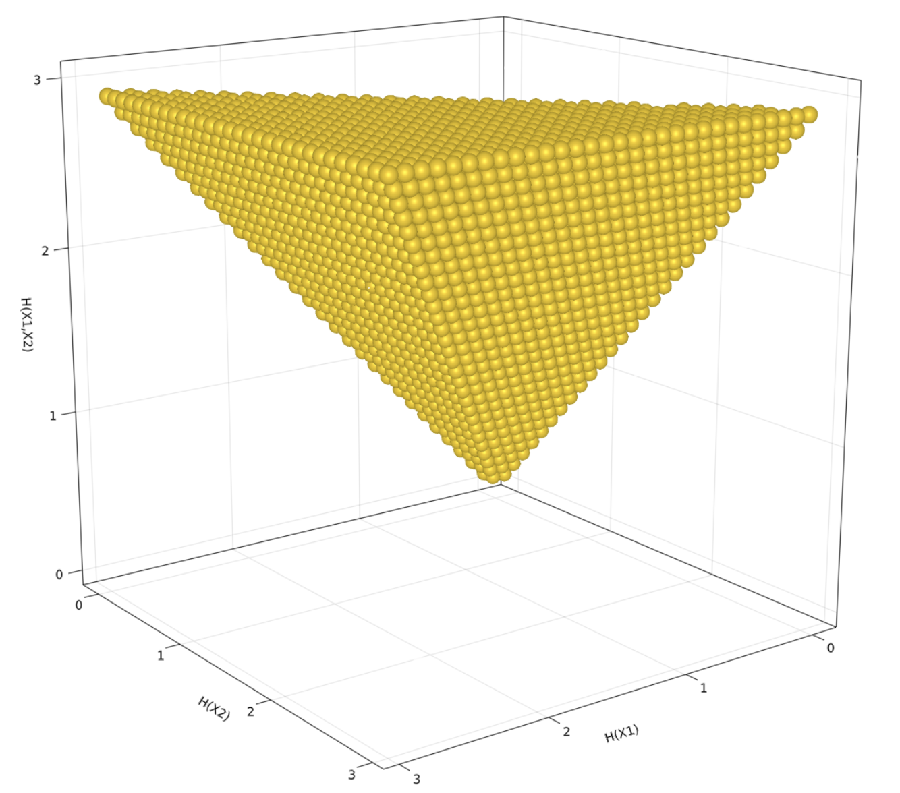

Information Measures in Canonical form
- Information Measures in Canonical form
- Elemental Information Inequalities (EIM)
- Canonical Represenation
Elemental Information Inequalities (EIM)
Information Inequalities which belong to any of the following type:
- Conditional Entropy of the form $H\left(X_i|X_{j\ne i}\right)$
- Conditional Mutual Information of the form $I\left(X_i;X_{j\ne i}|\mathbf{X}_\kappa \subseteq \mathcal{N}_{n}\backslash\{i,j\}\right)$
are called Elemental Information Inequalities (EIM). These are entropies of a single random variable or and conditional entropies of a single random variable, conditioned on other random variable or sets of random variables. "
Canonical Represenation
Canonical representation refers to expressiong information expression as entropies and joint entropies. e.g., $H(X1,X2,...,X_n)$. Elemental expressions can be decomposed to canonical form as follows:
- $H\left(X_i|\textbf{X}_{\mathcal{N} \backslash \{i\}}\right) = H\left(\textbf{X}_{\mathcal{N}}\right)$
- $I\left(X_i;X_j|\textbf{X}_{\kappa}\right)= H\left(X_i,\textbf{X}_\kappa\right)+H\left(X_j,\textbf{X}_\kappa\right)-H\left(X_i,X_j,\textbf{X}_\kappa\right)-H\left(\textbf{X}_\kappa\right)$
Entropic space for $\Gamma_{2}$

Basic concepts
Entropic space for $\Gamma_{2}$

Consider the square interval linear system
\[\mathbf{Ax}=\mathbf{b},\]
preconditioning the interval linear system by a real matrix $C$ means to multiply both sides of the equation by $C$, obtaining the new system
\[C\mathbf{Ax}=C\mathbf{b},\]
which is called preconditioned system. Let us denote by $A_c$ the midpoint matrix of $\mathbf{A}$. Popular choices for $C$ are
- Inverse midpoint preconditioning: $C\approx A_c^{-1}$
- Inverse diagonal midpoint preconditioning: $C\approx D_{A_c}^{-1}$ where $D_{A_c}$ is the diagonal matrix containing the main diagonal of $A_c$.
Improve numerical stability
Even if the algorithms theoretically work